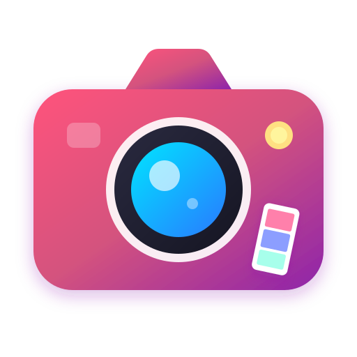

Virtual Photo Booth for Remote Events Virtual & Remote
Engage remote teams, Zoom parties, and virtual events with instant photo strips
About Virtual Photo Booth for Remote Events
Bring remote coworkers and online event attendees together! Our Virtual Photo Booth is the ideal icebreaker for Zoom happy hours, remote team building, webinars, and virtual family gatherings. Everyone gets to create and share their own themed photo strip.
Zero Corporate Software Blockers
Runs in standard secure browser sandboxes without requiring IT admin software approval.
Engaging Team Icebreaker
Dedicate 5 minutes of your meeting for everyone to snap their 3-cut strip and post in Slack or Teams.
Custom Theme & Lighting
Enhances dim home office lighting with bright contrast and skin tone optimization.
100% Free for Unlimited Teams
No per-user licensing fees or tiered corporate paywalls.
Pro Ideas & Tips for Virtual & Remote
- Host a 'Best WFH Pet' or 'Best Coffee Mug' photo strip competition during team all-hands.
- Combine team members' strips into a mosaic collage for your company newsletter or LinkedIn post.
- Encourage different backgrounds and virtual props to spark fun team conversations.
How to Create Your Virtual Photo Booth for Remote Events Strip
1
Share the Link in Chat
Drop this page link into your Zoom, Microsoft Teams, or Google Meet meeting chat.
2
Take 3 Fun Work-from-Home Poses
Show off your favorite coffee mug, work pet, or funny home office accessories.
3
Post in Team Slack Channel
Download the photo strip and share it in your team's #watercooler channel.
Frequently Asked Questions
Since webcams can only be accessed by one application at a time on some operating systems, simply pause your Zoom video feed for a moment while snapping your photobooth strip.